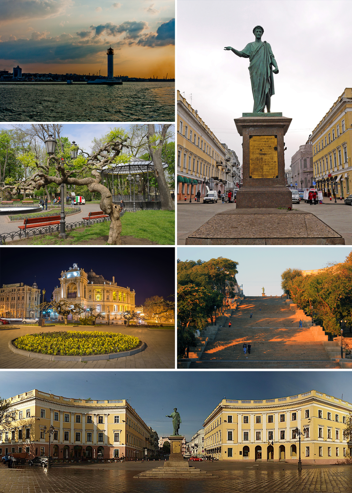

Odessa is the third most populous city of Ukraine and a major tourism center, seaport and transportation hub located on the northwestern shore of the Black Sea. It is also the administrative center of the Odessa Oblast and a multiethnic cultural center. Odessa is sometimes called the "pearl of the Black Sea", the "South Capital" (under the Russian Empire and Soviet Union), and "Southern Palmyra".
Before the establishment of Odessa, an ancient Greek settlement existed at its location. A relatively more recent Tatar settlement was also founded at the location by Hacı I Giray, the Khan of Crimea in 1440 that was named after him as "Hacıbey".[citation needed] After a period of Lithuanian Grand Duchy control, Hacibey and surroundings became part of the domain of the Ottomans in 1529 and remained there until the empire's defeat in the Russo-Turkish War of 1792.
In 1794, the city of Odessa was founded by a decree of the Russian empress Catherine the Great. From 1819 to 1858, Odessa was a free port. During the Soviet period it was the most important port of trade in the Soviet Union and a Soviet naval base. On 1 January 2000, the Quarantine Pier at Odessa Commercial Sea Port was declared a free port and free economic zone for a period of 25 years.
During the 19th century, Odessa was the fourth largest city of Imperial Russia, after Moscow, Saint Petersburg and Warsaw. Its historical architecture has a style more Mediterranean than Russian, having been heavily influenced by French and Italian styles. Some buildings are built in a mixture of different styles, including Art Nouveau, Renaissance and Classicist.
Odessa is a warm-water port. The city of Odessa hosts both the Port of Odessa and Port Yuzhne, a significant oil terminal situated in the city's suburbs. Another notable port, Chornomorsk, is located in the same oblast, to the south-west of Odessa. Together they represent a major transport hub integrating with railways. Odessa's oil and chemical processing facilities are connected to Russian and European networks by strategic pipelines.
| Go to another page |
|---|
|
click
a link
|